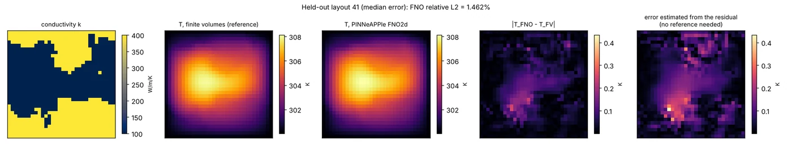

Replacing a solver with a neural network is easy to demonstrate and hard to defend: the field looks right, and nobody can say whether it is. The experiment builds the case where that question has a numeric answer: the cold plate from the NVIDIA Omniverse example, with the library's own FNO in place of PhysicsNeMo's.
The experiment
50 plate layouts, with source and geometry varying, solved by finite volumes to produce the reference. The FNO2d has 1.18 million parameters, width 32, 12 modes and 4 layers, and trains in 133 s (2,700 steps) to a final loss of 0.0063.
The numbers
Relative L2 error of 1.7% across the 50 layouts held out of training, with the hotspot erring by at most 0.24 K. Inference takes 1.59 ms per layout against 2.39 ms for the finite-volume solver, so 1.5 times faster, not a thousand.

The card says no
The decision came out REJECT. The PDE residual, with the certified energy bound, landed at 0.164 against a limit of 0.1, and the L2 error bound at 0.247 against 0.05. Boundary flux balance gave 5.4% against a 2% tolerance. The boundary condition (1.6% against 2%) and positivity (0.16% against 1%) passed, and those are the two easy ones.
The reference error, 2.5%, passed with room to spare. That is the lesson: matching the reference field and satisfying the equation are two different things, and the second one decides whether the result can enter a design.

How to read the result
The FNO is a fast surrogate that is faithful to the solver that produced it, and that already earns its place in design exploration. What it is not, at this training budget, is a solution of the equation: 2,700 steps were not enough to close the residual. Publishing both readings together is what lets the model be used where it serves and left out where it does not.